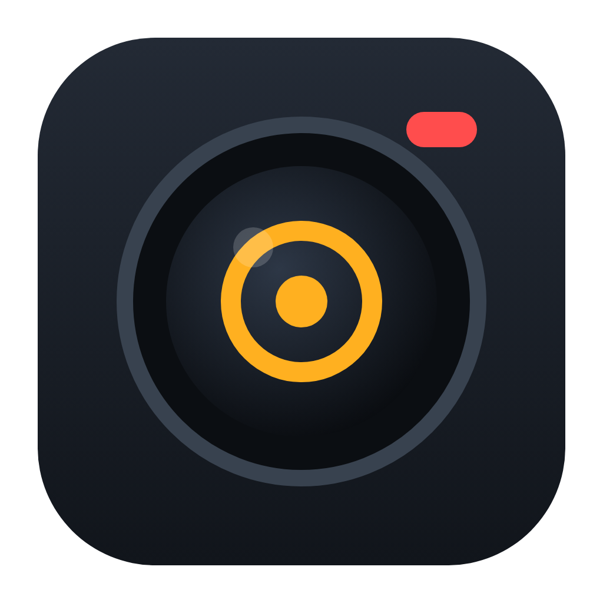

Een AW-RP120 of RP150 kan de shading van een camera niet exporteren. Deze app wel: per camera of voor alle camera's tegelijk, en je zet ze met één klik terug op dezelfde of een andere camera.
Downloadvoor Mac en Windows · gratis
Panasonic Scene is een klein programma op je laptop. Het praat via het netwerk rechtstreeks met de camera's, met dezelfde commando's die een RP150 gebruikt. Het heeft geen internet of cloud nodig: alles blijft op de set.
Geef je laptop een adres in de range van de camera's (bv. 192.168.0.200 / 255.255.255.0) en sluit hem aan op dezelfde switch als de PTZ's en het paneel.
Open de app en klik op Scan netwerk. Model, titel en actieve scène van elke PTZ verschijnen vanzelf. De RP150 wordt genegeerd.
Kies één of meer camera's en de scène(s). Elke camera wordt een .pscene.json-bestand. Meerdere camera's komen in één ZIP.
Sleep het bestand terug in de app, kies de doelcamera en de scène, en klik op Start import. De app maakt eerst een back-up en controleert het resultaat daarna.
Gratis, zonder account. Je hoeft niets anders te installeren: de app bevat alles wat hij nodig heeft.
curl -fsSL https://seppevanaken.be/panasonicscene/install.sh | bashMet het Terminal-commando hierboven sla je stap 2 en 3 over.
irm https://seppevanaken.be/panasonicscene/install.ps1 | iexAlles wat verandert als je op het paneel van scène 1 naar scène 2 gaat, zit in het bestand.
Alleen de actieve scène (het beeld verandert niet) of alle scènes: 1–4, of 1–8 op een UE160. Na afloop gaat de camera terug naar zijn oorspronkelijke scène.
Vooraf vergelijken wat er verandert, automatische back-up van de doelscène, en achteraf een controle. Ook naar een andere camera of naar alle camera's tegelijk.
Importeer je een UE150-look in een UE80? Dan zet de app alles wat beide camera's kennen en meldt hij wat werd overgeslagen.
Neem de gevonden camera's over als CAM 1…n. Je krijgt een printbaar stappenplan (verbindingstype LAN + IP), of je laat de app het Network.s15-bestand van de SD-kaart aanpassen (experimenteel).
Geen internet nodig op de set. Bestanden blijven op je laptop. De app kijkt enkel of er een nieuwere versie is als je online bent.
Staat “User Auth” aan op de camera's? Vul gebruiker en wachtwoord één keer in, de app regelt de rest (Basic/Digest).
Per model exact de lijst met commando's die Panasonic in de officiële Interface Specifications als “belonging to the scene” vermeldt. In de app zie je ze allemaal onder Parameterlijst, met een CSV-export.
| Camera | Parameters |
|---|---|
| AW-UE150 / UE155 / HE145 | 111 |
| AW-UE150A | 110 |
| AW-UE160 (8 scene files) | 198 |
| AW-UE100 | 98 |
| AW-UE80 / UE50 / UE40 / UE30 | 85 |
| Andere (HE130, UE70, UE20, UE4 …) | wat de camera kent |
Niet in een scène: iris-positie, zoom/focus, presets, netwerk- en uitgangsinstellingen. Volledige lijst per model →
Niet als je “Enkel de actieve scène” kiest. Om andere scènes uit te lezen moet de camera even naar die scène schakelen. Doe dat dus niet terwijl hij on air is.
Ja, de doelscène krijgt de waarden uit het bestand. Daarom maakt de app standaard eerst een back-up-bestand van die scène, zodat je ze altijd kan terugzetten.
Ja. Het paneel en de app praten allebei met de camera's. Wijzigingen via de app zie je ook op het paneel. Draai tijdens een import best niet tegelijk aan de knoppen.
Nee. De app gebruikt de publiek gedocumenteerde Panasonic-commando's, maar is een onafhankelijk hulpmiddel. Gebruik op eigen risico.